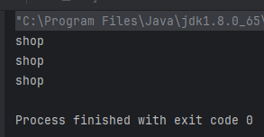

准备开一个新坑
国赛在即，深感自己基础知识薄弱，于是回过头来把owasp top 10的基础知识又过了一遍，结果在看的时候内部训练赛出了一道有意思的java反序列化题，当时没学过java，硬生生的靠着搜索引擎做出来了
刚好5.1放假，于是利用这个假期把java好好的学了一点点，写一些注解来帮助自己更好的掌握
本篇先从java最基础的反射调用说起
环境搭建
破防了，搭了整整两个小时，心好累不写了
java反射 (Reflection)
Java反射机制是在运行状态时，对于任意一个类，都能够获取到这个类的所有属性和方法，对于任意一个对象，都能够调用它的任意一个方法和属性(包括私有的方法和属性)，这种动态获取的信息以及动态调用对象的方法的功能就称为java语言的反射机制。
为什么这个值得单独提出来说呢，因为java是一种静态的语言，本身是不能随意修改属性的，这和php（输入什么就是什么）形成了鲜明的对比。
变量在声明时必须指定类型，且一旦创建，对象的类型不能改变
1 | Object object = new Object(); |
人尽可夫的php，传入什么就执行什么
1 | eval( echo 1) |
反射的原理
先来看一个正射的例子
1 | Student student = new Student(); |
与 ”正射“ 直接操作实例化的对象不同，”反射“通过操作类的原型来改变属性的值，像是神奇的扎小人，通过操作小人来让你感受钻心刻骨的疼痛。
对于一个java的程序来说，我们程序在运行的时候会编译生成一个 .class 文件，这个 .class 文件就是程序的”小人“，里面的内容就是相对应的类的所有信息。
每个类都有一个Class对象，每当编译一个新类就产生一个Class对象（比如创建一个Student类，那么，JVM就会创建一个Student对应Class类的Class对象，该Class对象保存了Student类相关的类型信息）
例如（后面解释）：
1 | Person person = new Person(); |
Class 类的对象作用是运行时提供或获得某个对象的类型信息。
所以反射其实就是操作 Class (注意是大写Class)
实操
获取类
先新建一个java类方便后续反射操作
1 | public class shop { |
这里定义了一个公有属性food，私有属性man，还有一些方法，我们来看看怎么反射操作：
1 | shop shopper = new shop("bread",1); |
这里先实例化了一个shop类名为shopper，通过自带的getclass方法来获取它的类，存在c中；
后续只需对c进行操作即可
同时，获取类还有几个方法
1 | Class class1 = Class.forName("reflection.TestReflection"); |
利用.forName 方法直接检索类名字获取这个类，或者直接获取这个类的类
可以写个代码来看看他们三个的功能
1 | public class reflectionTest { |

效果基本是一样的
获取成员属性、方法、构造函数
这里就放在一起说了，过程基本上差不多
属性
1 | Field[] getFields() ：获取所有成员属性(只能获得public |
写个代码来深化一下理解
1 | import java.lang.reflect.Constructor; |
初始化
1 | //获取所有成员属性(只能获得public |

1 | //获取所有的成员属性(包括private等等 |

可以看到加了Declared之后可以获取到本来private的man了
1 | //获取指定名称的 public 的成员属性 |
这里我引入了一个.set 方法，这个方法可以修改foodfield的值，第一个传入的属性是一个这个类的实例，第二个是你期望修改的值，这个基本上就是最简单的一个反射了！！

可以看到，我们成功修改了shopper对象的food值
1 | //获取指定的任意成员属性 |
这里我们期望修改man的值，但由于他是private，所以需要再引入一个新方法.setAccessible ，这个方法可以让原本无法访问的属性变得可访问，意如其名。

可以看到已经成功修改了
方法
1 | //调用类的方法 |
和属性的内容基本相同，只是filed改成了method，同时注意使用有参.getMethod 时需要指定参数类型

方法一打印出了许多原本自带的方法，当我们指定了action 时（shop里的一个方法），他就打印出了我们指定的字符串
构造函数
1 | import java.lang.reflect.Constructor; |
我们可以使用.newInstance() 利用class来创建一个新的对象，类似于女娲造人，用泥土捏一个新的人。
无参构造可以无脑c.newInstance()
有参构造的化，首先使用.getConstructor 来创建一个构造器同时指定参数类型，接着实例化就行了

我们成功利用反射构造出了一个新的对象
单独说一下invoke
在Java中，java.lang.reflect.Method.invoke() 方法可以用于动态地调用任何对象的任何方法，包括非同名方法。以下是一个基本的例子：
1 | import java.lang.reflect.Method; |
在这个例子中，我们首先创建了一个 Test 类的对象 test。然后，我们使用 Test.class.getDeclaredMethod("hello") 来获取 Test 类的 hello 方法的 Method 对象。最后，我们使用 method.invoke(test) 来调用 test 对象的 hello 方法。
反射的内容基本上就这些了，其实学下来也就多几个函数调用，但是这是我们入门java安全的基石
总结
反射的作用：
让java具有动态性
修改已有对象的属性
动态生成对象
动态调用方法
操作内部类和私有方法
在反序列化漏洞中的应用：
定制需要的对象
通过invoke调用除了同名函数以外的函数
通过Class类创建对象，引入不能序列化的类